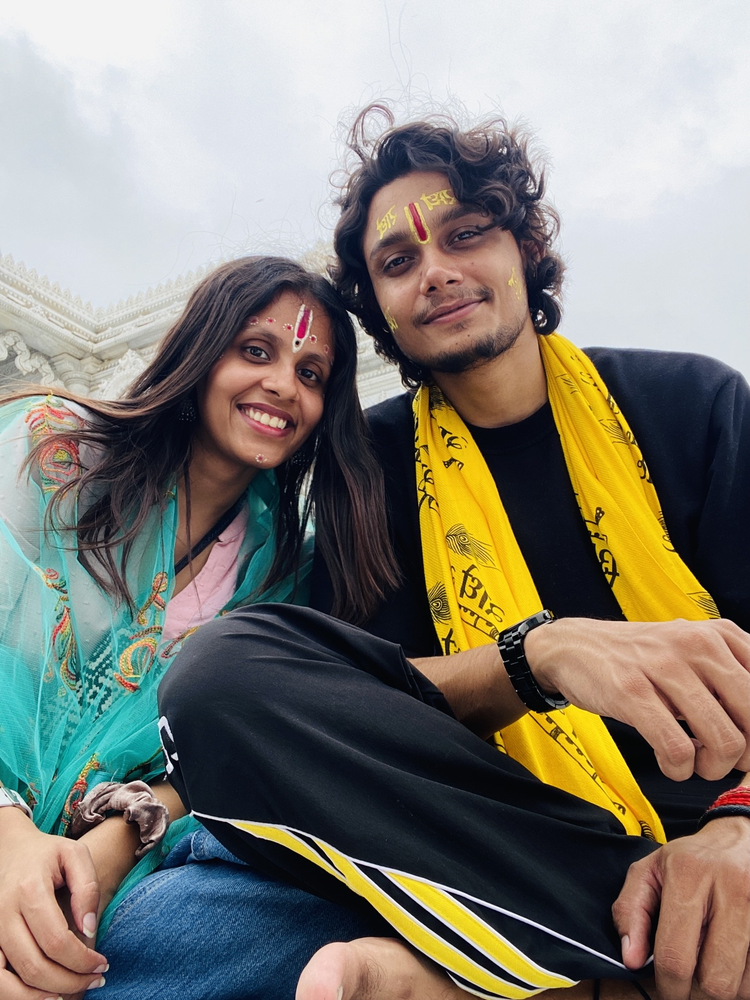
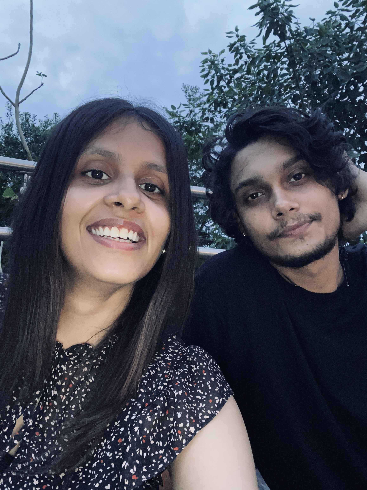
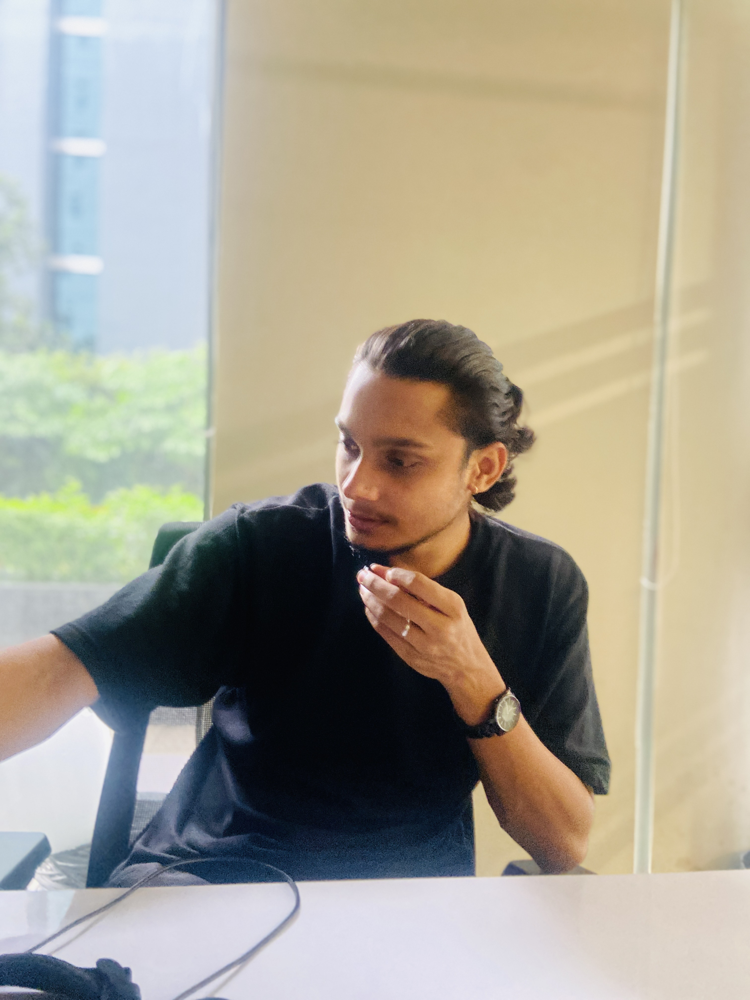
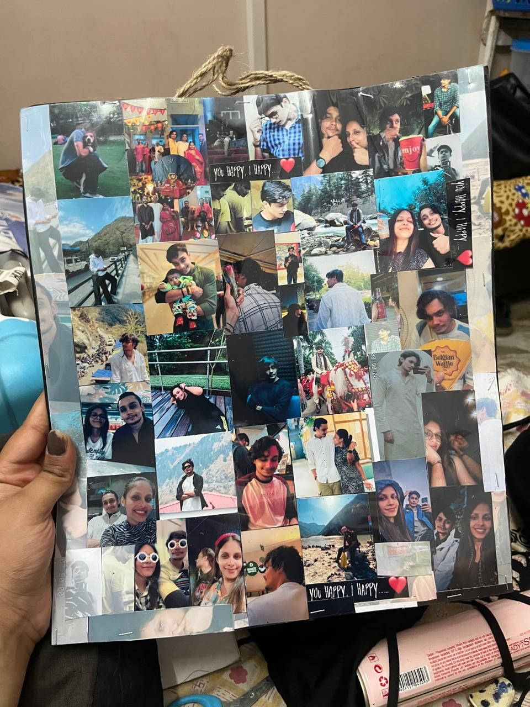

üíñ For Kussh
Change Theme
Play Song
Bakchodi nahi rukni chahiye
Ooohhhhhh, Hiiiiii Cutieeee

Hey Lover
Ab mein itna bhi kuch khaas nahi
Tera Smile = Mera Mood Fix

Meri Coffee Partner ☕

Gedi Nights Forever üåå
Cutest Drama Queen üòÖ

My Safe Place ü§ç
We look perfect while Fighting…
Henaaa üòú
I miss you here,
jaldi jaldi aaja
‚Ķ Life feels so difficult without you here baby üíî
♪